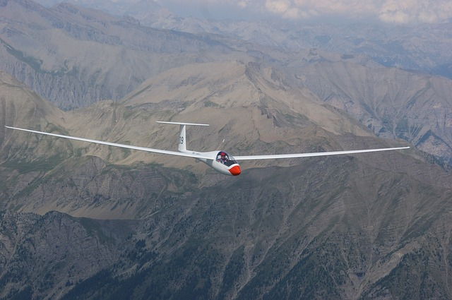

Archiv
- 1 Pokles hladiny podzemní vody při ustáleném rovinném proudění
- 2 Studna s volnou hladinou
- 3 Kužel s předepsaným tvarem
- 4 Chemická směs Chemikálii rozpouštíme v nádrži tak, že do
- 5 Vysílač Kojál Moravský vysílač Kojál nedaleko Vyškova
- 6 Hmotnost dřeva s proměnnou vlhkostí. Součástí mola je dřevěný
- 7 Mrkev a vitamín A Mrkev má tvar rotačního tělesa, které
- 8 Pesticidy a játra býložravců Přibližná hodnota \(\displaystyle C\) koncentrace
- 9 Růst buňky Buňka ve tvaru koule o poloměru \(\displaystyle r\) získává
- 10 Konstitutivní vztahy při konstantních parametrech
- 11 Divergence v 1D a snížení průtoku při kapkové závlaze
- 12 Rovnice podzemní vody
- 13 Rovinné proudění podzemní vody podruhé
- 14 O Otesánkovi.
- 15 Dlouhý a Bystrozraký.} Dlouhý má na ramenou Bystrozrakého ve výšce \(\displaystyle 4\) metry. Bystrozraký hledá princeznu a vzdálenost, na kterou vidí, je dána vzorcem pro vzdálenost k horizontu, tj. \[H=k\sqrt {h,\] kde \(\displaystyle H\) je vzdálenost k horizontu v kilometrech, \(\displaystyle h\) je výška pozorovatele nad povrchem v metrech a \(\displaystyle k\) je konstanta.
- 16 Nábytek bez atestu
- 17 Kontaminovaný salát} Bakterie na kontaminovaném salátu se množí rychlostí \[2e^{0.1t}\text{ milionů bakterií/den,\] kde \(\displaystyle t\) je čas ve dnech. Pokud je to možné, určete, o kolik se změní množství bakterií za čtyři dny. Pokud není dost informací, vysvětlete, jaké další informace potřebujeme.
- 18 Nádrž na zavlažování
- 19 Vlčí mák
- 20 Rychlost zvuku ve dřevě
- 21 Růst ryb
- 22 Termohrnek z rozemleté televize
- 23 Odvození rovnice vedení tepla v 1D
- 24 Kapka vody I
- 25 Kapka vody II
- 26 Výpočet \(\displaystyle \pi\) Pro \(\displaystyle n\neq -1\) vypočtěte integrály
- 27 Tlak v pneumatice
- 28 Kvadratický moment kruhu
- 29 Stacionární vedení tepla ve válcovém prostředí
- 30 Chemická reakce
- 31 Ondatra V roce 1905 vysadil na svém panství
- 32 Akumulátor Teplota studeného akumulátoru přeneseného do místnosti o pokojové teplotě roste rychlostí
- 33 Kmen stromu
1 Pokles hladiny podzemní vody při ustáleném rovinném proudění
Stavovou veličinou pro popis podzemní vody je \(\displaystyle h\) měřená v metrech (hrubá představa může být hladina spodní vody nebo, v případě že je shora ohraničení nepropustnou vrstvou, tak hladina, kam by vystoupila voda ve vrtu). Prostor, kde voda teče, se nazývá (aquifer). Proudění řídí , který vyjadřuje, že \(\displaystyle v_f\) podzemní vody je úměrná sklonu piezometrické hladiny, tj. rychlosti, s jakou klesá piezometrická hladina jako funkce \(\displaystyle x\).
()
Řešení
2 Studna s volnou hladinou
Uvažujme diferenciální rovnici \[\begin{equation} q=-kh\frac{\mathrm dh}{\mathrm dx} \tag{*}\label{*} \end{equation}\] odvozenou v B. Tentokrát budeme studovat studnu s volnou hladinou Je-li studna čerpána konstantní rychlostí \(\displaystyle Q\), je tok na jednotku délky na kružnici o poloměru \(\displaystyle x\) roven \(\displaystyle q=-\frac {Q}{2\pi x}\) (voda teče dovnitř, tj. ve směru ve kterém klesá \(\displaystyle x\)). Dosaďte tento vztah do rovnice a rovnici vyřešte s počáteční podmínkou \(\displaystyle h(R)=H\), kde \(\displaystyle H\) odpovídá hladině vody ve studni a \(\displaystyle R\) je poloměr studny (na obrázku \(\displaystyle h_w\) a \(\displaystyle r_w\)). Dostanete rovnici čerpané rychlostí \(\displaystyle Q\) (depresní křivka). ()
Řešení
\[ \begin{aligned} -\frac{Q}{2\pi x}&=-kh\frac{\mathrm dh}{\mathrm dx}\\ % \frac{Q }{2\pi x}\,\mathrm {d}x&=kh\,\mathrm d h\\ \frac{Q }{2\pi} \int \frac{\mathrm {d}x}{x}&=k\int h\,\mathrm d h\\ \frac{Q }{2\pi}\ln x&=k \frac {h^2}2 +c\\ \text{obecné řešení: } \frac{Q }{\pi}\ln x&=k {h^2} +C\\ \text{z počáteční podmínky: } \frac{Q }{\pi}\ln R&=k {H^2} +C\\ C&=\frac{Q }{\pi}\ln R-k {H^2}\\ \text{po dosazení do obecného řešení: } \frac{Q }{\pi}\ln x&=k {h^2} +\frac{Q }{\pi}\ln R-k {H^2}\\ \text{po úpravě: } \frac{Q }{k\pi}\ln \frac {x}{R}&={h^2} - {H^2}\\ \end{aligned} \] Tento vztah umožňuje například navrhnout průměr studny, odhadnout vydatnost studny, nebo pomocí odčerpávaného vrtu a menších pomocných vrtů sledujících pokles hladiny v okolí odčerpávaného vrtu stanovit filtrační součinitel \(\displaystyle k\). Využití vzorce \[ \frac{Q }{k\pi}\ln \frac {x}{R}={h^2} - {H^2} \] je však mnohem rozmanitější, umožňuje vypočítat poměry ve stavebních jámách a v jejich okolí. To je užitečné například při odhadu, kolik vody se hromadí ve výkopu. Další využití je, že dokážeme odhadnout vliv stavební jámy na hydrologické poměry v okolí a tyto poměry dokážeme měnit a přizpůsobovat našim potřebám. Častou aplikací je například hydraulická clona (soustava prvků rozmístěných a provozovaných tak, aby nedocházelo k šíření kontaminace z chemické výroby do vodárensky využívaných vod).
 # Rychlost klesání kluzáku Teplota klesá s výškou o \(\displaystyle 2^\circ \mathrm C\) na kilometr. Pilot kluzáku vidí, že teplota v okolí jeho kluzáku roste rychlostí \(\displaystyle 10^{-3}{}^\circ \mathrm C/\mathrm{s}\). Vyjádřete tato pozorování pomocí derivací a určete, jak rychle ztrácí kluzák výšku. Návod: Uvažujte složenou funkci \(\displaystyle T(h(t))\) a hledejte její derivaci podle času.
Řešení
Je-li \(\displaystyle h\) výška, \(\displaystyle T\) teplota a \(\displaystyle t\) čas, můžeme zadání přepsat do tvaru \[ \frac{\mathrm dT}{\mathrm dh}=-2^\circ\mathrm C/\mathrm{km}, \quad \frac{\mathrm dT}{\mathrm dt}= 10^{-3}{}^\circ\mathrm C/\mathrm{s}, \quad \frac{\mathrm dh}{\mathrm dt}=?. \] Vzorec pro derivaci složené funkce \(\displaystyle T(h(t))\) dává \[ \frac{\mathrm dT}{\mathrm dt} = \frac{\mathrm dT}{\mathrm dh} \cdot \frac{\mathrm dh}{\mathrm dt} \] a odsud \[ \frac{\mathrm dh}{\mathrm dt} = \frac{\frac{\mathrm dT}{\mathrm dt}}{\frac{\mathrm dT}{\mathrm dh}} \] a numericky \[ \frac{\mathrm dh}{\mathrm dt} = -\frac{10^{-3}}{2}=-5\cdot 10^{-4}\, \mathrm{km}\,\mathrm{s^{-1}}=-0.5 \,\mathrm{m}\,\mathrm{s}^{-1}. \] Kluzák klesá rychlostí půl metru za sekundu. To odpovídá i “selskému rozumu”, kdy uvažujeme tak, že jeden stupeň Celsia odpovídá půl kilometru, tj. 500 metrů. Za jednu sekundu klesne teplota podle zadání o \(\displaystyle 10^{-3}{}^\circ\mathrm{C}\), což je tisícina z jednoho stupně a tomu odpovídá tisícina z 500 metrů, tedy půl metru. Příklady, které si můžeme alespoň orientačně zkontrolovat výpočtem založeným na “selské logice” jsou obzvlášť cenné, protože nám dávají jistotu nutnou při použití v aplikacích, kde úvaha na provedení výpočtu bez derivací není reálná.
## Změna tlaku a lupání v uších V dopravním prostředku, který se pohybuje do kopce nebo z kopce, se mění tlak. Tím vznikne tlakový rozdíl mezi vnějším tlakem a tlakem ve středním uchu. Vyrovnání tlaku při rychlé změně se projeví lupnutím v uších. Lupnutí tedy nastane, pokud je derivace \(\displaystyle \frac {\mathrm d p}{\mathrm dt}\) velká. (Velká v absolutní hodnotě, tj. numericky hodně kladná nebo hodně záporná.) Tuto veličinu však je těžké měřit. Umíme měřit změnu nadmořské výšky \(\displaystyle u\) a víme, jak se tlak \(\displaystyle p\) mění s nadmořskou výškou. Nechť například \(\displaystyle \frac{\mathrm dp}{\mathrm du}=-0.12\,\mathrm{g}\,\mathrm{cm}^{-2}\mathrm{m}^{-1}\) (údaj meteorologů) a vezměme $ =-3,,^{-1}$. Okomentujte význam toho, že derivace jsou záporné a určete rychlost, s jakou rychlostí se mění tlak vzduchu.
Řešení
Derivace jsou záporné, protože tlak s rostoucí výškou klesá a nadmořská výška klesá s časem (vozidlo jede z kopce). Pomocí derivace složené funkce platí \[\frac{\mathrm dp}{\mathrm dt}=\frac{\mathrm dp}{\mathrm du} \cdot \frac{\mathrm du}{\mathrm dt}=-0.12 \,\mathrm{g}\,\mathrm{cm}^{-2}\mathrm{m}^{-1}\times (-3\,\mathrm{m}\,\mathrm{s}^{-1}) =0.36 \,\mathrm{g}\,\mathrm{cm}^{-2}\mathrm{s}^{-1}. \] Tlak roste rychlostí \(\displaystyle 0.36\) gramů na centimetr čtvereční za sekundu.
3 Kužel s předepsaným tvarem
Kužel má poměr poloměru podstavy \(\displaystyle r\), výšky \(\displaystyle h\) a délky strany \(\displaystyle s\) ve tvaru \[r:h:s=3:4:5.\] Kužel může měnit velikost, ale tento poměr zůstává zachován. (To odpovídá například skladování sypkého materiálu na hromadě nebo skladování tekutiny v trychtýřovitém zásobníku.) Objem a povrch pláště jsou \(\displaystyle V=\frac 13 \pi r^2 h\) a \(\displaystyle S=\pi rs\). Z úvah o podobnosti na přednášce víme, že vzorce pro objem a obsah musí být pro vhodné konstanty \(\displaystyle a\), \(\displaystyle b\), \(\displaystyle c\) tvaru \[V=ar^3,\ S=br^2,\ S=cV^{2/3}.\] Potvrďte tyto obecné závěry pro náš konkrétní případ přímým výpočtem a použitím uvedených vzorců a poté vypočtěte a podejte interpretaci derivací \[\frac{\mathrm dV}{\mathrm dr},\ \frac{\mathrm dS}{\mathrm dr}.\]
Řešení
Ze zadání víme, že platí \(\displaystyle s=\frac 53 r\) a \(\displaystyle h=\frac 43 r\) a přímým dosazením vidíme \[V=\frac 13 \pi r^2 \frac 43 r=\frac 49 \pi r^3\] a \[S=\pi r \frac 53 r=\frac 53 \pi r^2.\] Derivováním dostáváme \[ \frac{\mathrm dV}{\mathrm dr}=\frac 43 \pi r^2 \] a \[ \frac{\mathrm dS}{\mathrm dr}=\frac {10}3 \pi r. \] Tyto derivace vyjadřují změnu objemu a povrchu pláště kužele, pokud se kužel zvětší tak, že poloměr podstavy vzroste o jednotku.
Z rovnice pro objem dostáváme \[r=\left(\frac {9}{4\pi}\right)^{1/3}V^{1/3}\] a po dosazení \[S=\frac 53 \pi r^2 = \frac 53 \pi \left(\frac {9}{4\pi}\right)^{2/3}V^{2/3} =5\pi^{1/3}\left (\frac 3{16}\right)^{1/3} V^{2/3}\]
4 Chemická směs Chemikálii rozpouštíme v nádrži tak, že do
nádrže pumpujeme vodu a směs odčerpáváme. Objem směsi roste podle vztahu \(\displaystyle 20+2t\). Množství chemikálie \(\displaystyle y\) klesá rychlostí, která je úměrná \(\displaystyle y\) a nepřímo úměrná objemu roztoku v nádrži. Vyjádřete proces kvantitativně pomocí derivací.
Řešení
\[\frac{\mathrm dy}{\mathrm dt}=-ky\frac1{20+2t}\]
{
5 Vysílač Kojál Moravský vysílač Kojál nedaleko Vyškova
je třetí nejvyšší stavbou v ČR a má přibližně tvar hranolu o výšce 340 metrů. (Jeho dvojče, vysílač Krašov je ještě o dva metry vyšší a od roku 2018 tvoří i hlavní součást největších slunečních hodin na světě. Nejvyšší stavbou v ČR je vysílač Liblice B s 355 metry.)
Odhadněte hmotnost vzduchového sloupce, který by zaujímal místo vysílače. Pro tyto potřeby budeme vysílač uvažovat jako hranol. Půdorys odhadneme jako rovnostranný trojúhelník o straně tři metry, což je poměrně realistický model (). Hustota vzduchu se mění s výškou \(\displaystyle h\) (v metrech) podle vzorce \[\rho(h)=\rho_0 e^{-\rho_0 g h /p_0},\] kde \(\displaystyle \rho_0=1.225 \,\mathrm{kg}\,\mathrm{m}^{-3}\) je hustota vzduchu u země, \(\displaystyle p_0=101325\,\mathrm{Pa}\) normální tlak vzduchu a \(\displaystyle g=9.81\,\mathrm{kg}\,\mathrm{m}\,\mathrm{s}^{-2}\) je tíhové zrychlení (podle Wikipedie). Porovnejte výsledek s výsledkem, který byste dostali, kdybyste ignorovali změnu hustoty s výškou a použili pro hustotu konstantu \(\displaystyle \rho_0.\)
}
Řešení
Hmotnost \(\displaystyle m\) je dána vztahem \(\displaystyle m=\rho V\), kde \(\displaystyle \rho\) je hustota a \(\displaystyle V=Sh\) objem hranolu o podstavě \(\displaystyle S\) a výšce \(\displaystyle h\). Odsud \[ m=Sh\rho. \] Protože \(\displaystyle \rho\) se mění s výškou, musíme uvažovat jednotlivé vrstvy o výšce \(\displaystyle \Delta h\) samostatně, tj. \[ \Delta m=S\rho \Delta h \] a posečítat integrálem od země po výšku vysílače \(\displaystyle H=340\). \[ \begin{aligned} m&=\int _0^{H}S\rho \,\mathrm d h \\&= \int_0^{H}S\rho_0 e^{-\frac {\rho _0 gh}{p_0}}\,\mathrm dh\\&= S\rho_0\left[-\frac {p_0}{\rho _0 g} e^{-\frac {\rho _0 gh}{p_0}}\right]_0^{H} \\&= S\rho_0\left[-\frac {p_0}{\rho _0 g} e^{-\frac {\rho _0 g H}{p_0}}+\frac {p_0}{\rho _0 g}\right] \\&= \frac { Sp_0}{ g}\left[1- e^{-\frac {\rho _0 g H}{p_0}}\right] \end{aligned} \] Protože podstava je rovnostranný trojúhelník, platí \(\displaystyle S=\frac 12 \sin(60^\circ) a^2=a^2 \frac{\sqrt 3}{4}\), kde \(\displaystyle a=3\,\mathrm m\) je délka strany. Pro zadané hodnoty vychází \[ m= 1590.85 \,\mathrm kg \]
Pokud by se hustota neměnila s výškou a použili bychom hustotu u země, měli bychom \[ m=SH\rho_0=1623.14\,\mathrm{kg}. \]
Pro zajímavost, pokud bychom pro výpočet použili bychom hustotu uprostřed, měli bychom \[ m=SH \rho_0 e^{-\frac {\rho _0 g H}{2p_0}}=1590.75\,\mathrm{kg} \] a pokud bychom použili průměr hustoty vzduchu u země a na vrcholku, dostali bychom \[ m=SH\frac 12 \left( \rho_0 + \rho_0 e^{-\frac {\rho _0 g H}{p_0}}\right)=1591.07\,\mathrm{kg}. \] Pokud by závislost hustoty na výšce byla lineární, musely by dva poslední výpočty vycházet stejně, což není náš případ.
% var(‘h’) % p0=101325 % rho0=1.225 % g=9.81 % rho(h)=rho0exp(-rho0gh/p0) % a=3 % H=340 % S=1/4sqrt(3)a^2 % print “Presne:”, n(integrate(Srho(h),(h,0,340))) % print “S hustotu u zeme:”, n(SHrho0) % print “S hustotu uprostred:”, n(SHrho(H/2)) % print “Prumer hustoty nahore a dole”,n( 0.5* ( SHrho0+SHrho(H)) )
[0pt]
6 Hmotnost dřeva s proměnnou vlhkostí. Součástí mola je dřevěný
svislý metrový trám konstantního průřezu. Blízkost hladiny, vlhkost, občasné zašplouchání nebo zanesení kapek vody větrem, vynoření při odlivu a další efekty způsobily, že směrem dolů roste vlhkost a tedy i hustota dřeva. Předpokládejme, že hustota v bodě \(\displaystyle h\) (měřeno shora dolů) je dána funkcí \[\rho(h)=\rho_0(1+kh),\] kde \(\displaystyle \rho_0\) je hustota dřeva nahoře (nejdál od hladiny, kde je trám nejsušší) a \(\displaystyle k\) je konstanta úměrnosti související s hustotou vody a s tím, jak směrem dolů narůstá vlhkost. Potřebujeme odhadnout hmotnost trámu bez zásahu do mola, tj. nemůžeme vážit na vahách. Určete hmotnost trámu výpočtem.
{ Napište jenom příslušný integrál a okomentujte, jakou metodou bychom ho počítali. Vlastní výpočet provádět nemusíte. Všimněte si, že úloha je v podstatě stejná jako úloha o vysílači Kojál z minulého cvičení, ale vzhledem k jinému tvaru funkce popisující hustotu tentokrát integrujeme lineární funkci. Pro výpočet integrálu lineární funkce je možné využít střední hodnotu, která je průměrem funkční hodnoty na začátku a na konci oboru integrace (viz přednáška).
}
%Řešení
% Hmotnost je součin hustoty \(\displaystyle \rho\) a objemu, objem je součin obsahu průřeru \(\displaystyle S\) a výšky.
%7 Mrkev a vitamín A Mrkev má tvar rotačního tělesa, které
vznikne rotací křivky \[f(x)=\sqrt{14-x}\] okolo osy \(\displaystyle x\) na intervalu \(\displaystyle [0,12]\), kde \(\displaystyle x\) je v centimetrech. Koncentrace vitamínu \(\displaystyle A\) se mění podle vztahu \[c(x)=\frac 1{12}e^{-x/12} \,\mathrm{mg}\,\mathrm{cm}^{-3}.\] Jaký je objem mrkve, obsah vitamínu A a průměrná koncentrace vitamínu A v mrkvi?
Napište jenom potřebné integrály a vztahy, integrály nepočítejte.
Řešení
Pro konstantní \(\displaystyle f\) by mrkev byla ve tvaru válce o poloměru \(\displaystyle f\) a objem by byl \(\displaystyle V=\pi f^2 h\), kde \(\displaystyle h\) je výška válce (délka mrkve). Pokud se \(\displaystyle f\) mění s \(\displaystyle x\), musíme místo součinu uvažovat integrál a dostáváme \[V=\int_0^{12} \pi f^2(x)\,\mathrm dx=\pi\int_0^{12} 14-x\,\mathrm dx.\]
Pokud by koncentrace byla konstantní, stačí pro výpočet množství vitamínu A vynásobit objem koncentrací. Protože se koncentrace mění, musíme ji do součinu započítat ještě před integrací, tj. \[m=\int_0^{12} \pi c(x)f^2(x)\,\mathrm dx=\pi \frac 1{12}\int_0^{12} (14-x)e^{-x/12}\,\mathrm dx.\]
Průměrná koncentrace je hmotnost dělená objemem a stačí tedy vypočtené hodnoty vydělit.
8 Pesticidy a játra býložravců Přibližná hodnota \(\displaystyle C\) koncentrace
jistého pesticidu v játrech býložravců (měřená v mikrogramech pesticidu na gram jater) v čase \(\displaystyle T\) po zanesení tohoto pesticidu do životního prostředí je dána vztahem \[C=e^{-0.25T}\int_0^T 0.32 e^{-0.64 t}\,\mathrm dt.\] Vypočtěte hodnotu \(\displaystyle C\) jako funkci \(\displaystyle T\) a ukažte, že maximální hodnota \(\displaystyle C\) je přibližně po dvou letech.
Řešení
\[C=e^{-0.25 T}\left[-\frac{0.32}{0.64}e^{-0.64 t}\right]_0^T=\cdots =\frac 12 e^{-0.25T}-\frac 12 e^{-0.89T}\] Odsud \[\frac{\mathrm dC}{\mathrm dT}= \frac 12(-0.25) e^{-0.25T}-\frac 12 (-0.89) e^{-0.89T}\] a maximum je pokud je derivace nulová, tj. pokud \[ \frac 12(-0.25) e^{-0.25T}-\frac 12 (-0.89) e^{-0.89T}=0.\] Odsud dále dostáváme \[e^{0.64 T}=\frac{0.89}{0.25}\] a pomocí inverzní funkce \[{0.64 T}=\ln \frac{89}{25}\] a \[{ T}=\frac 1{0.64}\ln \frac{89}{25}\approx 1.98.\]

9 Růst buňky Buňka ve tvaru koule o poloměru \(\displaystyle r\) získává
živiny rychlostí úměrnou povrchu a spotřebovává živiny rychlostí úměrnou objemu. Získávání živin a spotřeba živin jsou tedy úměrné po řadě \(\displaystyle r^2\) a \(\displaystyle r^3\). Předpokládejme, že rychlost, s jakou roste objem s časem, je úměrná rozdílu mezi příjmem a výdejem. Sestavte diferenciální rovnici pro poloměr buňky, najděte její konstantní řešení a posuďte jeho stabilitu.
Řešení
Budeme používat kladné konstanty úměrnosti a součin několika konstant budeme vždy přeznačovat jako novou konstantu, aby výsledná rovnice byla co nejjednodušší.
Podle zadání a se zohledněním tvaru koule (objem úměrný třetí mocnině poloměru a povrch úměrný druhé mocnině poloměru) platí \[ \begin{aligned} \text{příjem}&=k_1S=\alpha r^2,\\ \text{výdej}&=k_2V=\beta r^3,\\ \text{rychlost růstu objemu}&=k_3( \text{příjem}- \text{výdej}) = k_3( \alpha r^2 -\beta r^3) =r^2 (A-Br), \end{aligned} \] kde \(\displaystyle A=k_3\alpha\), \(\displaystyle B=k_3\beta\), \(\displaystyle \alpha=4\pi k_1\), jsou konstanty.
Podle zadání platí \[\frac{\mathrm dV}{\mathrm dt}=r^2 (A-Br).\] Pro objem \(\displaystyle V=\frac 43 \pi r^3\) platí \(\displaystyle \frac {\mathrm dV}{\mathrm dt}=4\pi r^2\frac{\mathrm dr}{\mathrm dt}\) a po dosazení do předchozí rovnice \[4\pi r^2\frac{\mathrm dr}{\mathrm dt}= r^2 (A-Br).\] Po vydělení rovnice výrazem \(\displaystyle r^2\), osamostatnění výrazu \(\displaystyle \frac{\mathrm dr}{\mathrm dt}\) a přeznačení konstant dostaneme \[\frac{\mathrm dr}{\mathrm dt}= A_0-B_0r.\] Tato rovnice má jediné konstantní řešení pro \(\displaystyle r=\frac{A_0}{B_0}\). Protože platí \[\frac{\mathrm d}{\mathrm dr} (A_0-B_0r)=-B_0<0,\] je toto řešení stabilní. Pokud buňka přesáhne tuto hodnotu, je výdej větší než příjem a buňka neudrží vyrovnanou bilanci.
10 Konstitutivní vztahy při konstantních parametrech
Roura je dlouhá \(\displaystyle L=5\,\mathrm m\), má průměr \(\displaystyle d=0.8\,\mathrm m\) a je zanesená pískem. Koeficient filtrace z Darcyho zákona \[ q=-K\frac{\mathrm dh}{\mathrm ds} \] má hodnotu \(\displaystyle K=3\,\mathrm m/\mathrm{den}\), kde \(\displaystyle q\) je tok na metr čtvereční a \(\displaystyle \frac{\mathrm dh}{\mathrm ds}\) hydraulický gradient (rozdíl výšek při atmosférickém tlaku, nebo odpovídající rozdíl tlaků, vztažený na jednotku vodorovné délky). Jedna strana roury je o \(\displaystyle h=1.6\,\mathrm{m}\) výše než druhá a roura je na obou koncích zaplavená vodou po horní okraj. Vypočtěte tok vody rourou. Zkrácení vodorovné vzdálenosti konců při šikmém položení roury neuvažujte. ()
{
}
Řešení
Tok (\(\displaystyle Q\)) určíme vynásobením toku jednotkovou plochou (\(\displaystyle q\)) s obsahem průřezu roury (\(\displaystyle S=\pi \left(\frac d2\right)^2\)). Hydraulický gradient určíme z rozdílu výšek a vodorovné vzdálenosti, tj. \(\displaystyle \frac{\mathrm dh}{\mathrm ds}=\frac hL.\) Odsud pro velikost toku dostáváme \[|Q|= \pi \left(\frac d2\right)^2 K \frac hL=0.48 \,\mathrm{m}^3/\mathrm{den}.\]
11 Divergence v 1D a snížení průtoku při kapkové závlaze
Při kapkové závlaze uvažujme trubici, která má podél své délky otvory a těmito otvory uniká voda k rostlinám. Víme že na úseku 15 metrů se sníží průtok z \(\displaystyle 20\) litrů za minutu na \(\displaystyle 19\) litrů za minutu. Předpokládejme, že otvory pro zavlažování jsou rovnoměrně rozloženy podél celé délky. Jaká je lineární hustota zdrojů podél trubice? Předpokládejte rovnoměrné rozložení zdrojů.
Řešení
Na úseku \(\displaystyle 15\,\mathrm m\) se “ztratí” litr vody za minutu a tento litr se spotřebuje ve spotřebiči, tj. ve zdroji se zápornou vydatností. Vydatnost zdrojů je \[\sigma = -\frac{1\,\mathrm{l}/\mathrm{min}}{15\,\mathrm m}=-0.067\,\mathrm l \,\mathrm{m}^{-1}\,\mathrm{min}^{-1}.\]
12 Rovnice podzemní vody
Zapište pomocí vhodných veličin, operátorů a rovnic následující vztahy, zákony nebo pozorování, odpovězte na otázky a splňte úkoly.Řešení
13 Rovinné proudění podzemní vody podruhé
Prozkoumáme podruhé rovinné proudění, kterému jsme se věnovali v příkladě .
Řešení
14 O Otesánkovi.
Otesánek se vykrmil do tvaru koule o průměru \(\displaystyle 2{,}4\,\mathrm{m}\) a dále baští. Jeho objem roste konstantní rychlostí \(\displaystyle 0{,}002 \mathrm{m}^3/\mathrm{hod}\). Jak tato úloha souvisí s derivacemi a jak rychle roste průměr koule (Otesánka)? \[V=\frac 16 \pi d^3\]
15 Dlouhý a Bystrozraký.} Dlouhý má na ramenou Bystrozrakého ve výšce \(\displaystyle 4\) metry. Bystrozraký hledá princeznu a vzdálenost, na kterou vidí, je dána vzorcem pro vzdálenost k horizontu, tj. \[H=k\sqrt {h,\] kde \(\displaystyle H\) je vzdálenost k horizontu v kilometrech, \(\displaystyle h\) je výška pozorovatele nad povrchem v metrech a \(\displaystyle k\) je konstanta.
Dlouhý roste rychlostí \(\displaystyle 0{,}1\,\mathrm{m} \mathrm{s}^{-1}\). Jak tato úloha souvisí s derivacemi a jak rychle roste vzdálenost na kterou Bystrozraký vidí?
16 Nábytek bez atestu
Formaldehyd se z dřevěného výrobku v malé nevětrané místnosti uvolňuje jenom do dosažení určité rovnovážné koncentrace. Rychlost, s jakou přibývá množství formaldehydu ve vzduchu v místnosti, je úměrná množství, která do této rovnovážné koncentrace chybí. Zapište tento proces pomocí vhodného matematického modelu (diferenciální rovnice).
17 Kontaminovaný salát} Bakterie na kontaminovaném salátu se množí rychlostí \[2e^{0.1t}\text{ milionů bakterií/den,\] kde \(\displaystyle t\) je čas ve dnech. Pokud je to možné, určete, o kolik se změní množství bakterií za čtyři dny. Pokud není dost informací, vysvětlete, jaké další informace potřebujeme.
18 Nádrž na zavlažování
Nádrž má tvar válce a je do poloviny naplněna vodou. Máme tři různé úlohy.Každý děj zapište pomocí vhodného matematického modelu. Zajímá nás hloubka vody v nádrži. Výška nádrže nás nelimituje (nádrž v úloze A nepřeteče).
19 Vlčí mák
Vlčí mák je oblíbený letní plevel s obrovskou nadprodukcí semen. Předpokládejme, že rychlost s jakou roste populace vlčího máku je úměrná velikosti populace. Vyjádřete tento růst pomocí vhodné diferenciální rovnice.
## Ošoupané medaile
Dana Zátopková vozila svoji zlatou medaili po besídkách a nechávala ji zde kolovat mezi diváky. Tím se medaile otírala a ztrácela hmotnost. Pokusíme se popsat tento děj. Předpokládejme, že s odstupem od olympiády intenzita besídek slábne a rychlost otírání se snižuje. Jaký bude úbytek zlata na medaili za první rok, pokud předpokládáme, že rychlost s jakou se mění hmotnost \(\displaystyle m\) medaile je \(\displaystyle \frac{\mathrm d m}{\mathrm dt}=-\frac{1}{t+1}\) mikrogramů za týden?
## Brýle
\begin{enumerate}Funkce z předchozího bodu je \(\displaystyle \varphi=-\frac 1a\). Nechť \(\displaystyle a=10\,\mathrm m\) a nechť se \(\displaystyle a\) zkracuje rychlostí \(\displaystyle 0.1\) metru za rok. Napište, jak souvisí rychlost s jakou se mění \(\displaystyle a\) s rychlostí, s jakou se mění \(\displaystyle \varphi\) a pro daný případ určete, jak rychle se mění počet dioptrií nutných pro korekci této vady?
\end{enumerate}
20 Rychlost zvuku ve dřevě
Rychlost zvuku v pevné látce je dána vzorcem \(\displaystyle c=\sqrt{\frac E\varrho}\) kde \(\displaystyle c\) je rychlost zvuku v metrech za sekundu, \(\displaystyle E\) Yougův modul pružnosti v pascalech a \(\displaystyle \varrho\) hustota v kilogramech na metr krychlový. U dřeva předpokládejme, že v závislosti na vlhkosti se \(\displaystyle \varrho\) může měnit a \(\displaystyle E\) je konstantní. Určete derivaci \(\displaystyle \frac{\mathrm dc}{\mathrm d\varrho}\). Pokud například pro břízu \(\displaystyle \rho = 640 \,\mathrm{kg}\,\mathrm{m}^{-3}\) je tato derivace číselně rovna hodnotě \(\displaystyle -3.3\), doplňte jednotku a napište slovní interpretaci této derivace.
21 Růst ryb
Na rozdíl od jiných živočichů jsou malé ryby jsou přibližně zmenšeniny velkých ryb a proto je u nich hmotnost přibližně úměrná třetí mocnině délky. Najděte souvislost mezi rychlostí s jakou roste hmotnost kapra a rychlostí, s jakou roste délka kapra.
22 Termohrnek z rozemleté televize
Termohrnek bez atestu, vyrobený z rozemletého plastu ze staré elektroniky, uvolňuje do nápoje zdravotně závadné materiály. Například zpomalovače hoření, BFR. Předpokládejme, že tempo se kterým se BFR vylučuje do nápoje se snižuje s rostoucí kontaminací nápoje a s klesající teplotou nápoje, tj. klesá v čase. Vhodným modelem může být například \[r(t)=(10-2t) \,\mathrm{\mu g}/\mathrm{hod},\] kde \(\displaystyle r(t)\) je rychlost vylučování BFR do nápoje v čase \(\displaystyle t\) v mikrogramech za hodinu a \(\displaystyle t\) je čas v hodinách. Vypočtěte, jaké množství BFR se do nápoje uvolní za první hodinu a porovnejte s hodnotou, která se uvolní za druhou hodinu.
## Padání sněhu s proměnnou intenzitou
O půlnoci začal padat sníh rychlostí $6$ centimetrů za hodinu. Intenzita
slábla a v poledne přestalo sněžit. V tomto období je možné modelovat
rychlost padání sněhu funkcí $r(t)$, která splňuje $r(0)=6$ a
$r(12)=0$, kde $t$ je počet hodin od půlnoci v
hodinách a $r$ je rychlost v centimetrech za hodinu. Kolik sněhu napadalo? Zapište obecně a poté pro nejjednodušší funkci, která splňuje uvedené požadavky, pro funkci $$r(t)=6-\frac 12 t.$$
(Slunce nesvítilo a bylo pořád pod nulou.)
## Vyzařování tepla
\begin{enumerate}
\item Vyzařování ve wattech na metr čtvereční je dáno Stefanovým-Bolzmanovým zákonem
$$Q=\sigma T^4,$$
kde $T$ je teplota (v Kelvinech), $\sigma$ konstanta a $Q$ vyzářený výkon ve wattech na metr čtvereční. Vypočtěte derivaci
$$\frac{\mathrm dQ}{\mathrm dT}.$$
\item Derivace z předchozího bodu pro $T=300K$ je číselně rovna $6.12$. Doplňte jednotku a napište slovní interpretaci této derivace.
\end{enumerate}
Poznámka: Termodynamická teplota v Kelvinech je teplota ve stupních Celsia zmenšená o hodnotu 273.15.23 Odvození rovnice vedení tepla v 1D
Pokračujeme v úloze s vedením tepla v 1D. S využitím výsledků této úlohy zapište kvantitativně následující zákony.Poté oba zákony spojte do jednoho vztahu a odvodíte rovnici vedení tepla v 1D. Ukažte, že pokud bude tyč homogenní, po nastolení rovnováhy bude teplota lineární funkcí polohy.
Řešení
Spojením dostaneme \[ -\frac{\partial }{\partial x} \left( -k_1\frac {\partial T}{\partial x} \right) = k_2 \frac{\partial T}{\partial t} , \] a po úpravě \[ k_2 \frac{\partial T}{\partial t} = \frac{\partial }{\partial x} \left( k_1\frac {\partial T}{\partial x} \right). \] Častěji se tato rovnice píše ve tvaru \[ \rho c \frac{\partial T}{\partial t} = \frac{\partial }{\partial x} \left( k_1\frac {\partial T}{\partial x} \right), \] protože konstantu \(\displaystyle {k_2}\) můžeme vyjádřit pomocí fyzikálních charakteristik hustota \(\displaystyle \rho\) a měrná tepelná kapacita \(\displaystyle c\).
V rovnovážném stavu je derivace podle času nulová a dostáváme \[ \frac{\partial }{\partial x} \left( k_1\frac {\partial T}{\partial x} \right)=0 \] a pro homogenní tyč je \(\displaystyle k_1\) konstanta a proto \[ k_1 \frac{\partial }{\partial x} \left( \frac {\partial T}{\partial x} \right)=0. \] Druhá derivace podle \(\displaystyle x\) je tedy nulová, což znamená, že \(\displaystyle T\) je vzhledem k \(\displaystyle x\) lineární.
[-20pt]
24 Kapka vody I
Předpokládejme, že kapka vody má kulovitý tvar a při dešti roste tak, že objem jako funkce času se zvětšuje rychlostí úměrnou povrchu. (Kondenzace vodních par probíhá na povrchu a výsledek této kondenzace, voda, zvětšuje objem.) Přepište tento scénář do matematického modelu a všechny závislé proměnné vyjádřete pomocí objemu.
Řešení
Je-li \(\displaystyle V\) objem a \(\displaystyle S\) povrch koule, je \(\displaystyle \frac{\mathrm dV}{\mathrm dt}\) rychlost s jakou roste objem koule a přepisem zadání do kvantitativních vztahů dostáváme \[\frac {\mathrm dV}{\mathrm dt}= k_1S, \] kde \(\displaystyle k\) je konstanta úměrnosti. Protože díky podobnosti pro kouli platí \(\displaystyle S=k_2 V^{2/3}\) kde \(\displaystyle k_2\) je vhodná konstanta, dostáváme \[\frac{\mathrm dV}{\mathrm dt}=k_1k_2 V^{2/3}.\] Spojením obou konstant do jediné \(\displaystyle k=k_1k_2\) obdržíme výsledný model \[\frac{\mathrm dV}{\mathrm dt}=kV^{2/3}.\]
[-20pt]
25 Kapka vody II
Předpokládejme jako v předchozím příkladě, že kapka vody má kulovitý tvar a při dešti roste tak, že objem jako funkce času se zvětšuje rychlostí úměrnou povrchu. Ukažte, že poloměr jako funkce času roste konstantní rychlostí.
Řešení
Je-li \(\displaystyle V=\frac 43 \pi r^3\) objem kulovité kapky, platí (derivováním) \[\frac {\mathrm dV}{\mathrm dt}=4\pi r^2\frac{\mathrm dr}{\mathrm dt}\] a (přepisem zadání do řeči derivací a s využitím vzorce pro povrch koule) \[\frac {\mathrm dV}{\mathrm dt}= k 4\pi r^2, \] kde \(\displaystyle k\) je konstanta úměrnosti. Odsud \[4\pi r^2\frac{\mathrm dr}{\mathrm dt}=k 4\pi r^2\] a \[\frac{\mathrm dr}{\mathrm dt}=k.\] Napravo je konstanta, poloměr tedy roste konstantní rychlostí.
26 Výpočet \(\displaystyle \pi\) Pro \(\displaystyle n\neq -1\) vypočtěte integrály
\[\int_0^1 x^n\,\mathrm dx \qquad \text{a} \qquad \int_0^1 \frac{1}{1+x^2}\,\mathrm dx.\]
Vzorec pro součet geometrické řady s kvocientem \(\displaystyle -x^2\) je \[\frac{1}{1+x^2}=1-x^2+x^4-x^6+\cdots\] po integrování (a po zapojení teorie nekonečných řad, která ospravedlní integrování člen po členu a to, že v horní mezi je \(\displaystyle x=1\), přestože řada pro \(\displaystyle x=1\) nekonverguje) dává \[ \int_0^1 \frac{1}{1+x^2}\,\mathrm dx = \int_0^1 1\,\mathrm dx - \int_0^1 x^2\,\mathrm dx + \int_0^1 x^4\,\mathrm dx - \int_0^1 x^6\,\mathrm dx +\cdots . \] Po zintegrování vlevo dostaneme veličinu obsahující \(\displaystyle \pi\) a vpravo součet racionálních čísel. Tím je možné odhadnout hodnotu \(\displaystyle \pi\). Tato technika, používaná v jistých obměnách v 17. a 18. století, je mnohem efektivnější pro výpočet \(\displaystyle \pi\), než starší metoda pravidelných mnohoúhelníků vepsaných do kružnice. Dnes máme k dispozici řady, které k hodnotě \(\displaystyle \pi\) konvergují mnohem rychleji.
Řešení
Platí \[\int_0^1 \frac {1}{x^2+1}\,\mathrm dx=\left [\mathop{\mathrm{arctg}} x\right]_0^1=\mathop{\mathrm{arctg}} 1 - \mathop{\mathrm{arctg}} 0 = \frac \pi 4\] a \[\int_0^1 x^n \,\mathrm dx=\left[\frac 1{n+1} x^{n+1}\right]_0^1=\frac 1{n+1}.\] Proto integrováním vztahu \[\frac{1}{1+x^2}=1-x^2+x^4-x^6+\cdots\] dostaneme \[\frac{\pi}{4}=1-\frac 13 +\frac 15 - \frac 17+\cdots\] a vyjádření \(\displaystyle \pi\) pomocí řady je \[\pi=4-\frac 43 +\frac 45 - \frac 47+\cdots .\] Čím více členů započítáme, tím je aproximace čísla \(\displaystyle \pi\) přesnější.
27 Tlak v pneumatice
Tlakem v pneumatice rozumíme ve skutečnosti přetlak vůči atmosférickému tlaku. Poškozená pneumatika ztrácí vzduch tak, že množství vzduchu v pneumatice klesá rychlostí, která je úměrná tomuto tlaku. Tlak v pneumatice a množství vzduchu v pneumatice jsou také navzájem úměrné. Napište matematický model popisující pokles tlaku v čase.
Řešení
Je-li \(\displaystyle m\) hmotnost vzduchu v pneumatice a \(\displaystyle p\) tlak, z úměrnosti mezi oběma veličinami plyne \[\frac{\mathrm dm}{\mathrm dt}=k_1\frac{\mathrm dp}{\mathrm dt}.\] Podle zadání platí \[\frac{\mathrm dm}{\mathrm dt}=-k_2p.\] Odsud \[\frac{\mathrm dp}{\mathrm dt}=-kp,\] kde \(\displaystyle k\) je konstanta, která vznikne sloučením konstant \(\displaystyle k_1\) a \(\displaystyle k_2\).
28 Kvadratický moment kruhu
29 Stacionární vedení tepla ve válcovém prostředí
30 Chemická reakce
Při chemické reakci se spotřebovává enzym tak, že spolu za přítomnosti katalyzátoru reagují dvě molekuly tohoto enzymu. V důsledku toho rychlost s jakou se snižuje množství enzymu je úměrná druhé mocnině koncentrace a tedy i druhé mocnině množství tohoto enyzmu. Napište diferenciální rovnici popisující tento děj.
31 Ondatra V roce 1905 vysadil na svém panství
hrabě Colloredo-Mansfeld několik párů ondatry, které dovezl z Ameriky. Ondatra se díky absenci přirozených nepřátel rychle rozšířila po celé Evropě. Předpokládejme, že oblast zasažená rozšířením ondatry má tvar kruhu o poloměru \(\displaystyle 230\, \mathrm{km}\) a tento poloměr roste rychlostí \(\displaystyle 30 \,\mathrm{km}/\mathrm{rok}\). Jak rychle roste plocha kruhu? Jak rychle roste obvod kruhu?
32 Akumulátor Teplota studeného akumulátoru přeneseného do místnosti o pokojové teplotě roste rychlostí
\[ \frac 12e^{-t}\ {}^\circ\mathrm{C}/\mathrm{hod} \] kde \(\displaystyle t\) je čas v hodinách. Najděte změnu teploty akumulátoru za prvních pět hodin.
33 Kmen stromu
Kmen můžeme v určitých částech stromu primitivně modelovat válcem. Uvažujme délkový metr kmene, tj. válec o výšce 1m a poloměru \(\displaystyle r\). Hmotnost válce je \[ m=V\rho =\pi \rho r^2, \] kde \(\displaystyle \rho=700 \mathrm{kg/m^3}\) je hustota dřeva. Poloměr kmene roste rychlostí \(\displaystyle 0{,}01\,\mathrm{m/rok}\). Najděte vztah mezi rychlostí růstu poloměru válce a rychlostí růstu hmotnosti válce. Určete rychlost s jakou roste hmotnost v okamžiku, kdy poloměr kmene je \(\displaystyle r=0{,}20\,\mathrm{m}\).